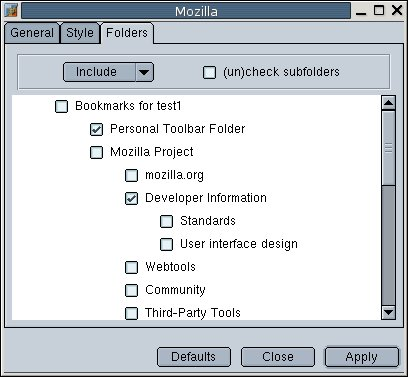

<!-- MAIN CONTENT -->
<h5 class="page-header">Screenshots</h5>

<p>
Don't worry, you can set the colors yourself :-) (see below).
</p><p>

</p><p>

</p><p>

</p>
<!--
<p>screenshots go here</p>
-->
